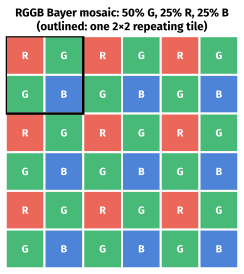
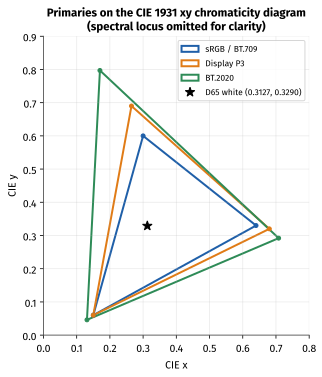
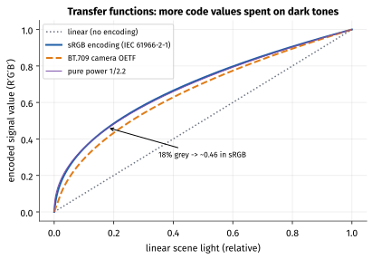
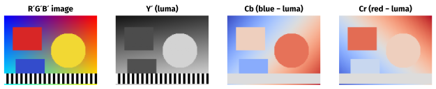
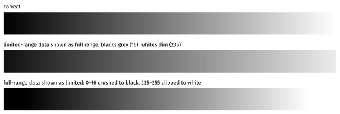
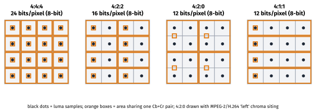
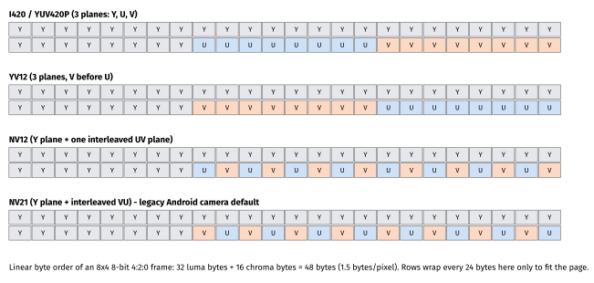
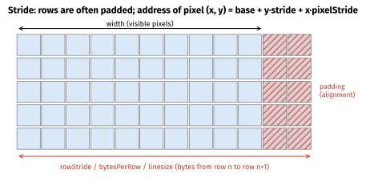
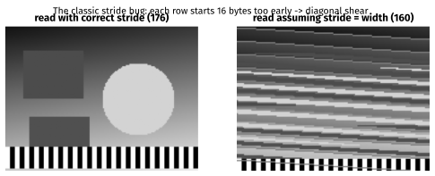

How to use this guide
This guide expands section 1.2 Digital Image Basics of the tutorial. Last week you turned sound into numbers; this week you do the same for light. Almost every camera, decoder and display bug you will debug in your career — sheared frames, green images, washed-out video, wrong colours on one device — traces back to a concept in this guide.
| Session | Suggested activity | Time |
|---|---|---|
| 1 | Sections 1–2: sensors, Bayer, resolution, bit depth, memory. Exercise A. | 2 h |
| 2 | Section 3: colour spaces and transfer functions. | 1.5 h |
| 3 | Sections 4–5: Y′CbCr, range, chroma subsampling. Exercise B (by hand). | 2 h |
| 4 | Section 6: memory layouts and stride. Exercises C and D. | 2 h |
| 5 | Section 7: image formats. Exercise E on a real phone photo; self-test. | 2 h |
Learning objectives.
- Explain how a Bayer sensor and demosaicing produce RGB pixels, and what pixel binning does.
- Compute megapixels and the uncompressed memory size of an image in RGB, RGBA and YUV formats.
- Define a colour space by its primaries, white point and transfer function, and name the ones used on phones.
- Convert R′G′B′ to Y′CbCr by hand (BT.601 and BT.709), in both limited and full range.
- Explain chroma subsampling notation and compute bytes per pixel for each scheme.
- Draw the memory layout of I420, NV12, NV21 and P010 and handle
rowStride/pixelStridecorrectly. - Choose between JPEG, PNG, WebP, HEIF, AVIF, Ultra HDR and DNG for a given job.
1. From light to pixels
1.1 The image sensor
A camera sensor (almost always CMOS on phones) is a grid of photosites. Each photosite converts photons into electrons during the exposure; the charge is read out as a voltage, amplified (the analogue gain, which is what "ISO" controls) and digitised by an ADC, typically at 10–14 bits. A photosite on its own is colour-blind: it measures how much light arrived, not what colour it was.
1.2 The Bayer colour filter array
To see colour, each photosite sits under a red, green or blue filter. The most common arrangement, the Bayer pattern, repeats a 2×2 tile of one red, two green and one blue filter. Green gets twice the share because human luminance sensitivity peaks in the green part of the spectrum.

The raw sensor output (a RAW or Bayer image) therefore has one value per pixel. Demosaicing — part of the phone's ISP (image signal processor) pipeline — interpolates the two missing colours at every pixel from neighbours. The ISP then performs black-level subtraction, lens shading correction, white balance, colour correction (a 3×3 matrix from sensor RGB to a standard colour space), noise reduction, tone mapping, sharpening, and finally converts to Y′CbCr for the encoder. You will study the ISP in Phase 4 and Phase 5; for now, note that the "pixels" you receive from a camera API are the end of a long computation.
Many modern phone sensors use quad-Bayer (or "tetracell"/"nonacell") layouts, where each colour filter covers a 2×2 (or 3×3) group of photosites. In low light the group is binned into one pixel — a 48 MP sensor produces a 12 MP image with better signal-to-noise — and in good light the ISP "remosaics" to full resolution.
1.3 Resolution and megapixels
Resolution is width × height in pixels. Phone sensors are usually 4:3, so photos default to 4:3 and 16:9 photos/videos are crops.
Worked example — megapixels
- 4032 × 3024 = 12 192 768 pixels ≈ 12.2 MP (a classic 12 MP phone photo).
- 8000 × 6000 = 48 000 000 = 48 MP; binned 2×2 → 4000 × 3000 = 12 MP.
- 3840 × 2160 (4K UHD video frame) = 8 294 400 ≈ 8.3 MP; 1920 × 1080 = 2 073 600 ≈ 2.1 MP.
Megapixels say nothing about sharpness on their own: lens quality, pixel size, noise and processing matter at least as much.
2. Bit depth and memory
2.1 Bit depth
Bit depth is bits per component (per channel). With 8 bits per channel there are 256 levels per channel and 256³ = 16 777 216 colours. With 10 bits per channel: 1024 levels, 1024³ = 1 073 741 824 colours.
The practical difference is banding: smooth gradients (sky, walls, vignettes) show visible steps when there are too few levels, especially after editing or in HDR, where the same number of codes must cover a far larger brightness range. That is why HDR video and HDR photos use 10 bits or more, and why RAW files keep 10–14 bits.
2.2 Uncompressed sizes
bytes = width × height × (bits per pixel ÷ 8)
| Format | Bits per pixel | 4032 × 3024 (12.2 MP) | 1920 × 1080 |
|---|---|---|---|
| RGB24 (8-bit R, G, B) | 24 | 36 578 304 B ≈ 36.6 MB | 6 220 800 B |
| RGBA / ARGB_8888 | 32 | 48 771 072 B ≈ 48.8 MB | 8 294 400 B |
| RGBA_F16 (half-float) | 64 | 97 542 144 B ≈ 97.5 MB | 16 588 800 B |
| RGB_565 | 16 | 24 385 536 B | 4 147 200 B |
| Y′CbCr 4:2:0, 8-bit (NV12/I420) | 12 | 18 289 152 B ≈ 18.3 MB | 3 110 400 B |
| Y′CbCr 4:2:0, 10-bit in 16-bit words (P010) | 24 | 36 578 304 B | 6 220 800 B |
| RAW Bayer, 12-bit packed | 12 | 18 289 152 B | — |
Bitmaps are big
On Android a 12 MP photo decoded to an ARGB_8888 Bitmap takes about 48.8 MB of memory, regardless of how small the JPEG was. Decoding a gallery of full-size images is the textbook cause of OutOfMemoryError. Decode at the size you will display (ImageDecoder.setTargetSize, BitmapFactory.Options.inSampleSize, or an image library such as Coil or Glide that does it for you), and consider Bitmap.Config.HARDWARE (API 26+) for images that are only drawn.
3. Colour: models, spaces and transfer functions
3.1 Colour models vs colour spaces
RGB is a colour model: a colour is a mix of red, green and blue light. But "red" is not a single thing — a laser-red and a TV-red are different colours. A colour space pins the model down with three things:
- Primaries — the exact chromaticities of the R, G and B lights, usually given as CIE 1931 xy coordinates.
- White point — the chromaticity of R = G = B. Nearly everything in consumer imaging uses D65 (x = 0.3127, y = 0.3290), a standard daylight.
- Transfer function — how code values relate to light intensity (the "gamma" curve).
| Colour space | Red (x, y) | Green (x, y) | Blue (x, y) | White | Used for |
|---|---|---|---|---|---|
| sRGB / BT.709 | 0.640, 0.330 | 0.300, 0.600 | 0.150, 0.060 | D65 | The web, most Android UI, HD video (same primaries) |
| Display P3 | 0.680, 0.320 | 0.265, 0.690 | 0.150, 0.060 | D65 | iPhone/modern Android displays and photos (wide colour) |
| BT.2020 | 0.708, 0.292 | 0.170, 0.797 | 0.131, 0.046 | D65 | UHD and HDR video |

Display P3 uses the DCI-P3 primaries with a D65 white point and the sRGB transfer function. On Android, ColorSpace.Named.DISPLAY_P3 and wide-colour rendering (Window.setColorMode(ActivityInfo.COLOR_MODE_WIDE_COLOR_GAMUT)) let apps show P3 content on capable displays; iOS has handled P3 photos end-to-end since the iPhone 7.
Same numbers, different colours
The pixel value (255, 0, 0) means a different red in sRGB and in Display P3. If a P3 photo is shown as if it were sRGB (because the colour profile was stripped or ignored), it looks dull; sRGB content shown as P3 looks oversaturated. Preserve and honour ICC profiles / colour-space tags.
3.2 Transfer functions ("gamma")
Human perception of brightness is roughly logarithmic: we notice a 1% change in a dark tone much more readily than in a bright one. If code values were proportional to light (linear), most of the 256 codes would be wasted on bright tones we cannot distinguish, and dark tones would band. Instead, images are stored gamma-encoded (non-linear): code values are roughly proportional to perceived brightness. The prime in R′G′B′ and Y′ marks gamma-encoded quantities.
- sRGB (IEC 61966-2-1): V = 12.92·L for L ≤ 0.0031308; otherwise V = 1.055·L1/2.4 − 0.055. Overall close to a 1/2.2 power.
- BT.709 OETF (camera side): V = 4.5·L for L < 0.018; otherwise V = 1.099·L0.45 − 0.099. Displays are specified separately (BT.1886, roughly a 2.4 power), and the mismatch is deliberate: it boosts contrast for dim viewing environments.
- PQ (SMPTE ST 2084) and HLG (ARIB STD-B67) are the HDR transfer functions — covered in Phase 6.

Worked example — 18% grey
A mid-grey card reflects about 18% of the light. In sRGB: 1.055 × 0.181/2.4 − 0.055 ≈ 0.461, i.e. 8-bit code ≈ 118. Conversely, code 128 (0.502) decodes to ((0.502 + 0.055)/1.055)2.4 ≈ 0.216, about 22% linear light. Half the code range is "about one-fifth" of the light.
Why this matters to you: image arithmetic — blending, resizing, blurring, averaging — is physically correct only in linear light. Scaling an sRGB image without linearising it darkens fine high-contrast detail. GPUs offer sRGB texture formats that linearise on sampling for this reason.
4. Y′CbCr: separating brightness from colour
4.1 Why not just RGB?
Our visual system resolves fine detail in brightness much better than in colour. If we transform R′G′B′ into one brightness-like component and two colour-difference components, we can store colour at lower resolution with little visible loss (section 5). That transform is Y′CbCr (commonly, if imprecisely, called "YUV"; strictly, YUV is the analogue PAL-era form).
4.2 The equations
Given gamma-encoded R′, G′, B′ in [0, 1] and two constants KR, KB:
Y′ = KR·R′ + (1 − KR − KB)·G′ + KB·B′
Cb = (B′ − Y′) / (2·(1 − KB)) Cr = (R′ − Y′) / (2·(1 − KR))
Y′ lies in [0, 1]; Cb and Cr lie in [−0.5, +0.5]. The constants depend on the standard — this is the matrix coefficients metadata you will meet again next week:
| Standard | KR | KB | Y′ equation | Used for |
|---|---|---|---|---|
| BT.601 | 0.299 | 0.114 | 0.299 R′ + 0.587 G′ + 0.114 B′ | SD video; JPEG/JFIF |
| BT.709 | 0.2126 | 0.0722 | 0.2126 R′ + 0.7152 G′ + 0.0722 B′ | HD video, most phone video |
| BT.2020 (NCL) | 0.2627 | 0.0593 | 0.2627 R′ + 0.6780 G′ + 0.0593 B′ | UHD/HDR video |

4.3 Quantisation and range
The continuous values are scaled to integers in one of two ways:
| Range | Also called | 8-bit Y′ | 8-bit Cb, Cr | 10-bit Y′ | 10-bit Cb, Cr |
|---|---|---|---|---|---|
| Limited | TV, video, "studio", MPEG range | 16–235 (Y = 16 + 219·Y′) | 16–240 (C = 128 + 224·Cb) | 64–940 | 64–960 |
| Full | PC, JPEG range | 0–255 (Y = 255·Y′) | 0–255 (C = 128 + 255·Cb, clipped) | 0–1023 | 0–1023 |
Limited range dates from analogue video, where footroom and headroom absorbed overshoots from filtering. It is still the default for broadcast and nearly all video codecs' output. JPEG uses full range. Phone video is usually limited range, but some devices record full-range video — always read the tag (color_range in ffprobe, KEY_COLOR_RANGE in Android's MediaFormat).
Worked example — pure red, by hand
R′G′B′ = (1, 0, 0).
BT.709: Y′ = 0.2126. Cb = (0 − 0.2126) / (2 × 0.9278) = −0.1146. Cr = (1 − 0.2126) / (2 × 0.7874) = +0.5. Limited range 8-bit: Y = 16 + 219 × 0.2126 = 62.6 → 63; Cb = 128 + 224 × (−0.1146) = 102.3 → 102; Cr = 128 + 112 = 240. Red = (63, 102, 240).
BT.601: Y′ = 0.299 → Y = 16 + 65.5 = 81; Cb = −0.299 / 1.772 = −0.1687 → 128 − 37.8 = 90; Cr = 240. Red = (81, 90, 240) — the classic value you will find in old test-pattern tables.
Same red, different numbers. A decoder must know which matrix was used.
4.4 What a mismatch looks like
Take the BT.601 limited-range red (81, 90, 240) and decode it with the BT.709 matrix: you get R′G′B′ ≈ (1.08, 0.10, −0.02) — clipped to (255, 24, 0) in 8-bit. A skin tone encoded with BT.601 as (167, 107, 154) and decoded as BT.709 comes out as about (222, 166, 131) instead of (217, 163, 133): slightly redder and more saturated. It is subtle on a single colour, obvious side by side, and it is exactly the "SD content looks slightly off" bug from the tutorial.
Range mismatches are far more visible:

5. Chroma subsampling
5.1 The J:a:b notation
Subsampling is written J:a:b, describing a region J pixels wide and 2 rows high: a is the number of chroma samples in the first row, b the number of additional (new) chroma samples in the second row.
- 4:4:4 — every pixel has its own Cb and Cr. No subsampling.
- 4:2:2 — chroma halved horizontally; each row has its own chroma.
- 4:2:0 — chroma halved horizontally and vertically: one Cb and one Cr per 2×2 block of pixels. (The "0" means the second row adds no new chroma samples.)
- 4:1:1 — chroma quartered horizontally (legacy DV formats).

bits per pixel (8-bit) = 8 × (1 + 2 × chroma fraction): 4:4:4 → 24, 4:2:2 → 16, 4:2:0 → 12, 4:1:1 → 12
5.2 Chroma siting
In 4:2:0, where is the shared chroma sample located relative to the four luma samples? MPEG-2, H.264 and HEVC default to "left" siting (horizontally co-sited with the left luma column, vertically halfway between rows); JPEG/JFIF uses the centre of the 2×2 block. Getting it wrong shifts colour by half a pixel — usually invisible, but measurable on sharp coloured edges and text.
5.3 When subsampling hurts
Subsampling is nearly invisible in camera images, but it damages sharp colour edges: red text on blue, UI screenshots, chroma-keyed graphics. That is why screen recording and graphics pipelines sometimes use 4:4:4, and why a screenshot saved as JPEG (4:2:0) shows colour fringes around text while PNG does not.
6. Memory layouts on mobile
6.1 Planar and semi-planar formats
A 4:2:0 frame can be laid out in memory in several ways. You will meet these constantly in MediaCodec, ImageReader, CameraX, OpenGL/Vulkan, and FFmpeg:
| Name | FFmpeg pix_fmt |
Layout | Where you meet it |
|---|---|---|---|
| I420 (YUV420P) | yuv420p |
Y plane, then U plane, then V plane | Software codecs, FFmpeg, libyuv, WebRTC |
| YV12 | (yuv420p with U/V swapped) |
Y, then V, then U | Android legacy (ImageFormat.YV12) |
| NV12 | nv12 |
Y plane, then one plane of interleaved U, V | Hardware decoders/encoders, iOS 420v/420f |
| NV21 | nv21 |
Y plane, then interleaved V, U | Legacy Android Camera1 preview default |
| P010 | p010le |
Like NV12, 10 bits stored in the high bits of 16-bit words | 10-bit HDR decode/capture |
| YUV_420_888 | — | Android's flexible descriptor: three planes with arbitrary row and pixel strides | Camera2, CameraX ImageAnalysis, MediaCodec.getOutputImage() |

Worked example — I420 plane offsets
For a W × H frame (W, H even), I420 stores: Y at offset 0 (size W·H), U at offset W·H (size W·H/4), V at offset 5·W·H/4 (size W·H/4); total 3·W·H/2. For 1920 × 1080: Y = 2 073 600 bytes, U at 2 073 600, V at 2 592 000, total 3 110 400 bytes. For odd dimensions, chroma planes are ⌈W/2⌉ × ⌈H/2⌉.
6.2 Stride, pixel stride and slice height
Hardware rarely stores rows back-to-back. For DMA, caches and GPU tiling, each row may be padded to a multiple of 16, 64, 128 or more bytes. The distance in bytes between the start of one row and the next is the stride (Android: rowStride; iOS: bytesPerRow; FFmpeg: linesize). Similarly, decoders often pad the height: a 1080-line frame is commonly allocated as 1088 lines (a multiple of 16), signalled by MediaFormat.KEY_SLICE_HEIGHT.

Android's Image.Plane adds a pixel stride: the distance between adjacent pixels of the same plane. For planar (I420-like) chroma it is 1; for semi-planar (NV12/NV21-like) chroma it is 2, because U and V are interleaved. YUV_420_888 guarantees that the Y plane has pixel stride 1 and that U and V share the same row stride and pixel stride — but nothing else. Code that assumes "pixel stride 2 means NV21" works on many phones and breaks on others.

A correct, stride-aware conversion from YUV_420_888 to NV21 (useful for libraries that only accept NV21):
import android.graphics.ImageFormat
import android.media.Image
/** Copies a YUV_420_888 Image into a tightly packed NV21 byte array, honouring strides. */
fun Image.toNv21(): ByteArray {
require(format == ImageFormat.YUV_420_888) { "Unsupported format $format" }
val w = width
val h = height
val out = ByteArray(w * h + 2 * (w / 2) * (h / 2))
val (yPlane, uPlane, vPlane) = planes
// Y: pixel stride is guaranteed to be 1, but row stride may exceed the width.
val yBuf = yPlane.buffer
var pos = 0
for (row in 0 until h) {
yBuf.position(row * yPlane.rowStride)
yBuf.get(out, pos, w)
pos += w
}
// Chroma: U and V share rowStride and pixelStride (guaranteed), which may be 1 or 2 (or more).
val uBuf = uPlane.buffer
val vBuf = vPlane.buffer
val cRowStride = uPlane.rowStride
val cPixStride = uPlane.pixelStride
for (row in 0 until h / 2) {
for (col in 0 until w / 2) {
val i = row * cRowStride + col * cPixStride
out[pos++] = vBuf.get(i) // NV21 = V first
out[pos++] = uBuf.get(i)
}
}
return out
}
This per-pixel loop is clear but slow for large frames; in production use libyuv (which ships optimised converters such as Android420ToI420), a GPU shader, or CameraX's built-in RGBA output (ImageAnalysis.Builder().setOutputImageFormat(ImageAnalysis.OUTPUT_IMAGE_FORMAT_RGBA_8888)).
On iOS, camera and decoder frames arrive as CVPixelBuffers, typically kCVPixelFormatType_420YpCbCr8BiPlanarVideoRange ('420v', NV12 limited range), ...FullRange ('420f'), 10-bit kCVPixelFormatType_420YpCbCr10BiPlanarVideoRange ('x420'), or kCVPixelFormatType_32BGRA. Lock the buffer, then use CVPixelBufferGetBaseAddressOfPlane and CVPixelBufferGetBytesPerRowOfPlane — the same stride discipline applies.
7. Image file formats
7.1 How JPEG works (a preview of next month's compression)
- Convert RGB to Y′CbCr (BT.601 matrix, full range, per JFIF).
- Subsample chroma (usually 4:2:0 in phone cameras; 4:4:4 at high quality settings in some encoders).
- Split each plane into 8×8 blocks and apply the DCT, turning pixels into frequency coefficients.
- Quantise each coefficient by a quantisation table (the quality setting scales the table) — the lossy step.
- Zig-zag scan, run-length encode the many zeros, and Huffman-code the result.
You will study steps 3–5 in detail in Week 4. Two practical JPEG facts: EXIF metadata carries capture info and the Orientation tag (phones usually store sensor-orientation pixels and set the tag rather than rotating the pixels), and baseline JPEG is 8-bit only.
7.2 The format landscape
| Format | Compression | Bit depth / alpha | Strengths | Mobile support notes |
|---|---|---|---|---|
| JPEG | Lossy DCT | 8-bit, no alpha | Universal | Everywhere; Bitmap.CompressFormat.JPEG |
| PNG | Lossless (prediction filters + DEFLATE) | 8/16-bit, alpha | Exact pixels, UI assets, screenshots | Everywhere |
| WebP | Lossy (VP8 intra) or lossless | 8-bit, alpha | Smaller than JPEG/PNG for web/app assets | Android natively; CompressFormat.WEBP_LOSSY/LOSSLESS (API 30+); iOS 14+ decodes |
| HEIF / HEIC | HEVC intra-coded images in an ISO BMFF container | 8/10-bit, alpha, depth, bursts | ~half JPEG size at similar quality | iPhone default since iOS 11 (tiled as a grid of 512×512 HEVC images); Android 9+ decodes (ImageDecoder), HeifWriter in AndroidX to encode |
| AVIF | AV1 intra in HEIF container | 8/10/12-bit, alpha, HDR | Excellent compression, royalty-free | Android 12+ decodes; iOS 16+ decodes |
| DNG (RAW) | Usually lossless | 10–16-bit Bayer or linear | Editing latitude | Camera2 ImageFormat.RAW_SENSOR + DngCreator; Apple ProRAW |
| Ultra HDR JPEG | JPEG + embedded gain map | 8-bit base + gain map | SDR-compatible HDR photos | Android 14+ capture and display (Android "Ultra HDR image format" specification) |
Decoding APIs on Android
Prefer ImageDecoder (API 28+): it handles JPEG, PNG, WebP (including animated), GIF, HEIF (API 28+) and AVIF (Android 12+), applies EXIF orientation, supports target-size decoding and returns hardware bitmaps by default. BitmapFactory remains for older APIs. Check Bitmap.getColorSpace() to see whether a decoded image is sRGB or Display P3.
8. Hands-on exercises
The expected outputs were produced with FFmpeg 7.1. Use a real 12 MP phone photo where indicated; synthetic numbers are provided where they are deterministic.
Exercise A — Inspect a phone photo
Copy a photo from your phone (Android: adb pull /sdcard/DCIM/Camera/<name>.jpg; iPhone: AirDrop, or export as "Most Compatible" for JPEG and as-is for HEIC).
ffprobe -v error -show_entries stream=codec_name,width,height,pix_fmt,color_range,color_space \
-of default=noprint_wrappers=1 photo.jpg
exiftool -Orientation -ColorSpace -ProfileDescription -ImageSize photo.jpg # if installed
identify -verbose photo.jpg | grep -iE "geometry|colorspace|sampling-factor|quality" # ImageMagick
Expected (typical phone JPEG): codec_name=mjpeg, pix_fmt=yuvj420p (the j means full "JPEG" range; 4:2:0 subsampling), color_range=pc, color_space=bt470bg (FFmpeg's name for the BT.601 matrix). ImageMagick shows sampling-factor: 2x2,1x1,1x1 for 4:2:0. Compute the decoded size by hand: for 4032 × 3024, 36 578 304 bytes as RGB24, and compare with the file size (typically 2–5 MB) to get the compression ratio.
If you have a HEIC from an iPhone, ffprobe shows several HEVC streams (the tiles of the grid) — note the tile size.
Exercise B — Y′CbCr by hand, then check
- By hand, convert pure green (0, 1, 0) and pure blue (0, 0, 1) to 8-bit limited-range Y′CbCr with BT.709 and BT.601.
- Check with a short script (Python, Kotlin scratch file, or Cursor's terminal):
def ycbcr(r, g, b, kr, kb):
y = kr*r + (1-kr-kb)*g + kb*b
cb = (b - y) / (2*(1-kb)); cr = (r - y) / (2*(1-kr))
return round(16 + 219*y), round(128 + 224*cb), round(128 + 224*cr)
for name, rgb in {"red": (1,0,0), "green": (0,1,0), "blue": (0,0,1)}.items():
print(name, "709:", ycbcr(*rgb, 0.2126, 0.0722), "601:", ycbcr(*rgb, 0.299, 0.114))
Expected:
red 709: (63, 102, 240) 601: (81, 90, 240)
green 709: (173, 42, 26) 601: (145, 54, 34)
blue 709: (32, 240, 118) 601: (41, 240, 110)
Exercise C — Raw YUV sizes and viewing raw buffers
# Convert a photo (or any image) to raw NV12 and raw RGB24 - no headers, just bytes
ffmpeg -i photo.jpg -pix_fmt nv12 -f rawvideo photo.nv12
ffmpeg -i photo.jpg -pix_fmt rgb24 -f rawvideo photo.rgb
ls -l photo.nv12 photo.rgb
# Raw files have no header: you must tell the reader the format, size and layout
ffplay -f rawvideo -pixel_format nv12 -video_size 4032x3024 photo.nv12
Expected for a 4032 × 3024 image: photo.nv12 is 18 289 152 bytes and photo.rgb is 36 578 304 bytes — exactly 1.5 and 3 bytes per pixel. Now view the NV12 file as -pixel_format nv21 instead. The brightness is identical (same Y plane) but colours swap: reds turn bluish and blues reddish, because U and V are read in the wrong order. Write down this symptom — "right picture, wrong colours" almost always means a chroma-order (NV12/NV21) or matrix mix-up.
Exercise D — Reproduce the stride bug
Read the NV12 buffer with the wrong width, as code that ignores stride would:
ffmpeg -f rawvideo -pix_fmt nv12 -s 4032x3024 -i photo.nv12 -frames:v 1 right.png
ffmpeg -f rawvideo -pix_fmt nv12 -s 4016x3024 -i photo.nv12 -frames:v 1 wrong.png
Expected: right.png is your photo. wrong.png is sheared diagonally — each row starts 16 bytes earlier than the last — with smeared, misaligned colours from the chroma plane. FFmpeg will also warn that the input contains leftover bytes ("Invalid buffer size, packet size … < expected frame_size"), because the buffer is bigger than the size it was told to expect. This is exactly the picture you get on a device whose decoder output has stride = 4096 when your code assumes stride = width.
On the phone: in a CameraX ImageAnalysis analyser, log image.width, image.height, and for each plane rowStride and pixelStride, at two or three resolutions. Note any resolution where rowStride > width and whether chroma pixelStride is 1 or 2. Compare two phones from different SoC vendors if you can.
Exercise E — Compare image formats
Using the same source photo:
ffmpeg -i photo.jpg -pix_fmt yuvj444p -q:v 2 q2_444.jpg
ffmpeg -i photo.jpg -pix_fmt yuvj420p -q:v 2 q2_420.jpg
ffmpeg -i photo.jpg -c:v libwebp -quality 85 photo.webp
ffmpeg -i photo.jpg -c:v libaom-av1 -still-picture 1 -crf 30 -cpu-used 8 photo.avif # if your build has libaom
ffmpeg -i photo.jpg photo.png
ls -l q2_444.jpg q2_420.jpg photo.webp photo.avif photo.png
Expected pattern: PNG is the largest by far (lossless); 4:2:0 JPEG is roughly half the size of 4:4:4 JPEG at the same -q:v; WebP and AVIF are smaller still. (On a 4032 × 3024 synthetic test image I measured PNG 5.7 MB, JPEG 4:4:4 1.48 MB, JPEG 4:2:0 0.76 MB, WebP 0.44 MB; real photos will differ, but the ordering usually holds.) Zoom into fine coloured detail in each and decide which differences you can see. Note: when FFmpeg converts an RGB input to JPEG without -pix_fmt, it keeps 4:4:4; phone cameras normally write 4:2:0.
Exercise F — Observe range in video
Using any short video clip (your phone's, or one generated with ffmpeg -f lavfi -i testsrc2=duration=2 -pix_fmt yuv420p clip.mp4):
ffprobe -v error -select_streams v:0 -show_entries stream=pix_fmt,color_range,color_space -of default=nw=1 clip.mp4
ffmpeg -i clip.mp4 -frames:v 1 correct.png
ffmpeg -i clip.mp4 -vf setparams=range=pc -frames:v 1 mislabelled.png # pretend it is full range
Expected: mislabelled.png looks flatter — blacks lifted, whites dimmed — because limited-range data is being interpreted as full range. This is the "washed-out video" bug you will see when a player or GPU shader ignores the range flag.
9. Common pitfalls
- Ignoring stride (row stride or slice height) — sheared images and crashes from reading past the end of a plane.
- Assuming a fixed chroma layout from
YUV_420_888(e.g. "pixel stride 2 means NV21"). - Swapping U and V (NV12 vs NV21, I420 vs YV12) — right picture, wrong colours.
- Mixing up range — washed-out or crushed video. Range must be carried from decoder to renderer.
- Using the wrong matrix (BT.601 vs BT.709) — subtle hue shifts, especially in skin tones.
- Doing image maths on gamma-encoded values — dark halos when scaling, wrong blends.
- Stripping colour profiles — P3 photos look dull when treated as sRGB.
- Decoding full-size bitmaps for thumbnails — out-of-memory errors.
- Ignoring EXIF orientation — sideways photos in your app when the gallery shows them correctly.
- Saving screenshots/UI as JPEG — chroma fringes around text and ringing; use PNG or lossless WebP.
10. Self-test
- How many megapixels is 4032 × 3024? How much memory does it need as an
ARGB_8888bitmap and as NV12? - Why does a Bayer sensor have twice as many green photosites as red or blue?
- What three things define a colour space? Give the white point used by sRGB, P3 and BT.2020.
- Why are images stored gamma-encoded rather than linear? Why should resizing be done in linear light?
- Write the BT.709 Y′ equation. Why does green have the largest coefficient?
- Convert R′G′B′ = (1, 1, 1) (white) and (0, 0, 0) (black) to 8-bit limited-range Y′CbCr. Does the matrix matter for these two colours?
- What do "limited" and "full" range mean for 8-bit and 10-bit luma? What does a limited-as-full mismatch look like?
- Explain 4:2:0. How many bytes does a 1280 × 720 8-bit 4:2:0 frame need?
- What is the difference between NV12 and NV21, and between NV12 and I420? What is a stride?
- In Android's
YUV_420_888, what is a pixel stride, and what values do you expect for planar and semi-planar chroma? - A decoder outputs 1920 × 1080 NV12 with
stride = 2048andslice-height = 1088. How many bytes is the buffer, and at what offset does the UV plane begin? - Why do screenshots look worse as JPEG than as PNG, even at high quality?
- Which formats can hold 10-bit images: JPEG, PNG, HEIF, AVIF, WebP?
- Why does a 12 MP HEIC from an iPhone show up in
ffprobeas many HEVC streams? - A colleague says "the JPEG is only 3 MB, so decoding it is cheap on memory". What do you reply?
- Your preview looks right but colours are swapped (faces look bluish). What two causes would you check first?
11. Further reading
- Charles Poynton, Digital Video and HD: Algorithms and Interfaces (2nd ed., Morgan Kaufmann) — chapters on colour science, gamma, Y′CbCr and subsampling are the gold standard. Poynton's free "Gamma FAQ" and "Color FAQ" (poynton.ca) are excellent short introductions.
- ITU-R Recommendations BT.601, BT.709 and BT.2020 — the primary sources for matrices, primaries and quantisation ranges (free from itu.int).
- IEC 61966-2-1 — the sRGB standard (the transfer function and primaries are widely reproduced, e.g. in the W3C CSS Color specifications).
- Android Developers:
Image,Image.PlaneandImageFormat.YUV_420_888reference pages; the CameraXImageAnalysisguide;ImageDecoderreference; "Enhance graphics with wide color content". - libyuv (chromium.googlesource.com/libyuv/libyuv) — the reference library for fast YUV conversions on mobile; its format documentation is a useful glossary of FOURCCs.
- Apple Developer: Core Video
CVPixelBufferreference and the AVFoundation "Capturing photos in HEIF/HEVC" documentation and WWDC sessions on wide colour. - FFmpeg documentation: the
pix_fmtlist (ffmpeg -pix_fmts),scaleandsetparamsfilters, and thezscalefilter for accurate colour-space conversion.
Answer key
- 4032 × 3024 = 12 192 768 ≈ 12.2 MP.
ARGB_8888: × 4 = 48 771 072 bytes ≈ 48.8 MB. NV12: × 1.5 = 18 289 152 bytes ≈ 18.3 MB. - The eye's luminance sensitivity peaks in green, and green contributes most to perceived brightness and detail; sampling green more densely gives better luma resolution.
- Primaries (xy of R, G, B), white point, and transfer function. All three use D65 (x = 0.3127, y = 0.3290).
- Perception is roughly logarithmic, so a non-linear encoding spends codes where the eye can see differences and avoids banding in shadows with 8 bits. Physical light adds linearly, so averaging/filtering gamma-encoded values gives wrong (too dark) results; linearise, process, re-encode.
- Y′ = 0.2126 R′ + 0.7152 G′ + 0.0722 B′. Green dominates human luminance sensitivity (and the coefficients are derived from the primaries' luminances and the white point).
- White: Y′ = 1, Cb = Cr = 0 → (235, 128, 128). Black: (16, 128, 128). The matrix does not matter for neutrals (any grey has Cb = Cr = 0), which is why matrix errors show only in colours.
- Limited: 8-bit Y 16–235 (C 16–240), 10-bit Y 64–940 (C 64–960). Full: 0–255 / 0–1023. Limited interpreted as full: blacks look grey, whites dim, low contrast ("washed out").
- One Cb and one Cr per 2×2 block of pixels. 1280 × 720 × 1.5 = 1 382 400 bytes.
- NV12 stores Y then interleaved UV; NV21 stores Y then interleaved VU. I420 stores Y, U and V as three separate planes; NV12 has two planes. Stride is the number of bytes between the starts of consecutive rows, which can exceed width × bytes per pixel because of padding.
- Pixel stride is the byte distance between adjacent samples of the same plane. Planar chroma (I420-like): 1. Semi-planar (NV12/NV21-like): 2. Code must use whatever the plane reports.
- Y plane: 2048 × 1088 = 2 228 224 bytes, so the UV plane begins at offset 2 228 224. UV plane: 2048 × 544 = 1 114 112 bytes. Total 3 342 336 bytes (versus 3 110 400 if tightly packed). (Some decoders do not pad the last plane's final rows; always use the reported values.)
- JPEG's 4:2:0 subsampling smears colour edges, and DCT quantisation causes ringing around sharp text edges; PNG is lossless and keeps full chroma.
- PNG (16-bit), HEIF, and AVIF. Baseline JPEG and WebP are 8-bit.
- iPhone HEIC images are stored as a grid of tiles (512 × 512 HEVC-coded images) plus a derived-image item that tells the decoder how to stitch them;
ffprobelists the tiles as streams. - The decoded bitmap size depends on pixel count, not file size: 12.2 MP × 4 bytes ≈ 48.8 MB as
ARGB_8888. Decode at display size. - U/V order (NV12 vs NV21, or I420 vs YV12) and R/B channel order (RGBA vs BGRA) in the conversion or texture upload. (A wrong matrix causes smaller hue shifts, not a swap.)